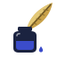

Draw here — a shape, a detail, a scene…
Tip: Ctrl+Enter to search · add more sketches with + to show different features of the same thing.

InklingSketch it. Describe it. Find it.
Draw here — a shape, a detail, a scene…
Tip: Ctrl+Enter to search · add more sketches with + to show different features of the same thing.